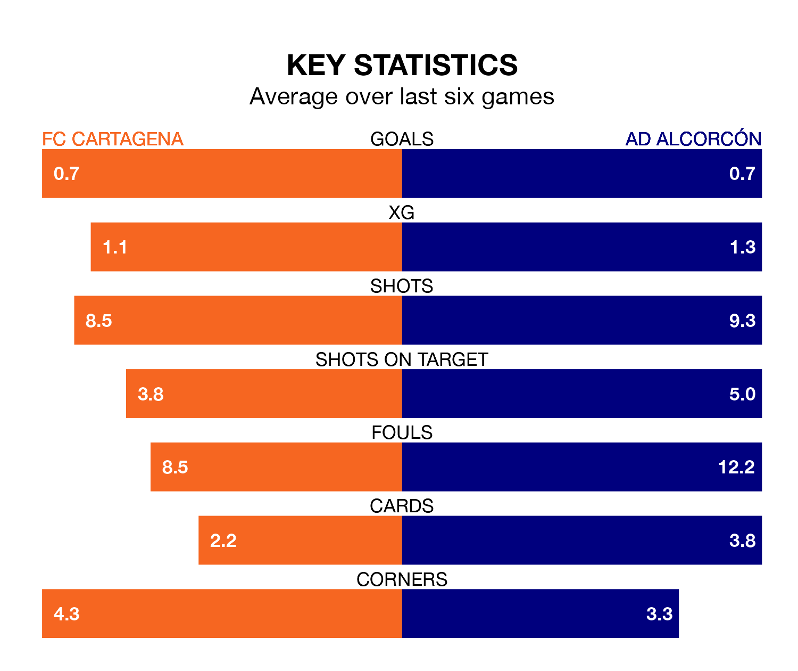

AD Alcorcón travel to FC Cartagena on late Saturday in the Segunda División.
The visitors come into the game on the back of a draw in their last match, having tied with CD Eldense 0-0 at home.
Cartagena, meanwhile, won their last match, 1-0 against Levante UD, with their goal scored by Alfredo Ortuño Martínez.
In the last 10 years, Cartagena and Alcorcón have played each other on seven occasions. Cartagena won two of them, Alcorcón one, and they drew four times.
On average, Cartagena scored 1.3 goals and Alcorcón 1.0 in those matches.
Their last meeting was on December 6, when they played out a 0-0 draw.
Alcorcón are 19th in the table after 37 games, of which they have won 10 and drawn 11, earning 41 points.
Cartagena are five places ahead of the away team in 14th, with 12 wins and nine draws putting them on 45 points.
With 27 goals in 37 games so far this season, Alcorcón are the league's lowest scorers with 0.7 goals per game. And they are conceding more than average, letting in 46 goals at a rate of 1.2 per game.
The hosts are also below average scorers, with 0.9 goals per game, compared to a league average of 1.1. They have conceded 1.2 goals per game.
Cartagena are in mixed form in the Segunda División, with three wins and a draw from their last six games.
With three wins and two draws over that period, Alcorcón's form is slightly better – they have taken 11 points from 18, compared to Cartagena's 10.
Updated: 10:44 (UTC), 30/04/24